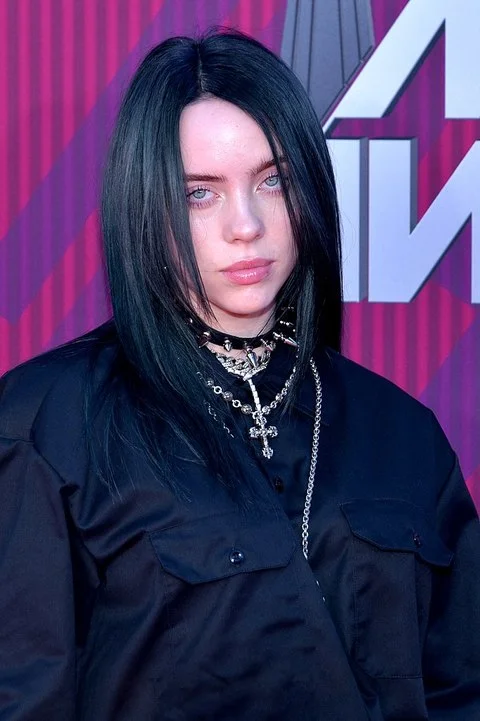

<!DOCTYPE html>
<html lang="pt-br">

</html>

<head>
    <title>Musica</title>
    <meta charset="UTF-8">
    <link rel="stylesheet" href="style.css">

</head>


<body>

<header class="header" id="topo">
        <font size="7"> <h1 class="title"> História da música</h1> </font>
                 <div class="links" id="my_menu" align="center">
             <nav>
               
                     <a href="index.html"> História</a> 
                     <a href="Biografia.html"> Biografia</a> 
                     <a href="BUTTERFLY 1.html"> Música </a>
                     
             </nav>
                  </div>
                  <h1 class="centro"> Biografia de Billie Eilish </h1>
                  

                  <p>Billie Eilish Pirate Baird O’Connell é uma jovem estrela pop que compõe e canta. 
                    A menina prodígio, com uma promissora carreira internacional, está cada vez mais famosa entre o grande público.
                    A artista nasceu em Los Angeles (Califórnia) no dia 18 de dezembro de 2001.</p>
                  <h4 class="centro">Origem</h4> 
                  <p> A cantora é filha dos atores Maggie Baird e Patrick O'Connell e tem um irmão chamado Finneas O’Connell.
                  Apesar de fazerem parte da indústria artística, antes de terem reconhecimento o pai de Billie trabalhou na construção civil (para a Mattel) e a mãe foi professora.</p>
                  <h4 class="centro">Início da carreira</h4>
                  <p>A jovem começou a cantar aos oito anos de idade no Children’s Chorus. 
                  Aos 14 anos passou a lançar material original, escrito por ela e produzido e co-escrito pelo irmão Finneas O’Connell.
                  A música que a divulgou para o mundo foi Ocean Eyes, lançada em 2016.
                  Seu primeiro álbum lançado, When We All Fall Asleep, Where Do We Go?, em março de 2019, foi eleito um dos melhores discos do ano.</p>
                  <p>Foi assim até 2016, quando Billie gravou Ocean Eyes, música composta por seu irmão. 
                  Billie conta que ficou tão animada com a faixa que pediu para sua professora de dança montar uma coreografia exclusiva para ela. 
                  A canção estreou em 84º lugar no top 100 da Billboard.
                  Apesar de não ter feito tanto sucesso, o lançamento foi essencial para que a produção do seriado 13 Reasons Why a procurasse para que integrasse a trilha sonora da primeira temporada.</p>
                  <p>Mais tarde, em 2018, a parceria se repetiu e Billie lançou Lovely, em parceria com Khalid.
                  Em julho de 2017, a cantora anunciou seu primeiro EP, Don’t Smile at Me, que teve seu lançamento dividido em 9 semanas, nas quais a cantora liberava uma faixa a cada sexta-feira.
                  O EP logo emplacou, e Billie foi anunciada como artista destaque pela Apple Music.</p>
                  <p>Após sair em sua primeira turnê, em 2018, a cantora confirmou que um álbum de estúdio estaria a caminho. 
                  Em fevereiro de 2019, When We All Fall Asleep Where Do We Go? Foi lançado em todas as plataformas digitais e quebrou diversos recordes, além de vender mais de 310 mil cópias em sua semana de estreia. 
                  Vale lembrar que o álbum foi inteiramente produzido por Finneas.
                 <p>Um dos maiores méritos o álbum se deve ao single Bad Guy, conquistando o topo da Billboard 100. </p>
                  A canção conquistou as categorias mais disputadas do Grammy Awards 2020, sendo elas Gravação do Ano e Música do Ano.
                  Além destas, Billie Eilish se tornou a primeira mulher na história da premiação ao vencer todas as categorias principais do evento.</p>
                  <h4 class="centro">A trilha sonora de 007s</h4>
                 Billie Eilish recebeu a encomenda de fazer um single para o novo filme do James Bond (007: Sem tempo para morrer). 
                 A jovem compôs, ao lado do irmão, a música No time to die, que ficou no topo das paradas de sucesso.
                 Billie é até hoje a compositora mais jovem a ter sido escolhida para escrever uma canção tema da saga James Bond.</p>
                  
                  


                </body>
                <footer>
                    2022
                    </footer>  